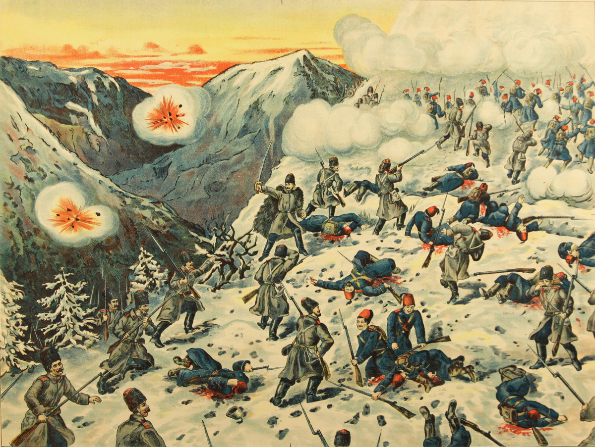

Ottoman Empire
About
The Ottoman Empire was founded by Turkish tribes, specifically Osman the 1st and his ancestors as warriors of their faith of Islam in Anatolia and developed into one of the most powerful empires to rule the globe in the 15th and 16th century.Over 600 years, 5 major events and a large record of history later the Ottoman Empire fell in 1922, when the Turkish Republic took its place. During the reign of the Ottomans the capital was Constantinople or modern-day Istanbul and had supposdely covered around 5,000,000-22,000,000 square km at it's peak. Multiple currencies were used in different eras of the empire such as the lira, sultani, akce, para and kurus.
Location
During the peak of the Ottomans they had occupied much of southeastern Europe, including modern-day Hungary, the Balkans, Greece and parts of Ukraine and strecthing out to the outskirts of Vienna; portions of the middle east which is currently encompased by modern-day Iraq, Syria, Israel, Egypt, Jordan, Palestine, Turkiye, Lebanon; North africa going as far as Algeria to the west and a large chunk of the Arabian Peninsula.

Population
The population of the Ottoman Empire recorded in 1914 was roughly 25 million people, akmost 1/4 of Turkiyes population today. The population consisted of 10,000,000 Turks, 6,000,000 Arabs, 2,500,000 Armenians, 1,500,000 Kurds and 1,500,000 Greeks. It appears as if during these times the population was much more diverse than it is today, even religiously, compared to Modern-day Turkiye with a 99.8% Muslim population. During the Ottoman times in 1914 the Muslim population was between 80-90%.
Politics
Political Leaders
During the Ottoman emprire the first in rule, which is reffered to as Sultan was Sultan the first from 1299-1324 and the last Sultan being Mehmed the sixth from 1918-1922.

List Of Sultans
- Osman the 1st (1300-1324)
- Orhan Ghazi (1324-1360)
- Murad the 1st (1360-1389)
- Bayezid the 1st (1389-1402)
- Mehmed the 1st (1413-1421)
- Murad the 2nd (1421-1444)
- Mehmed the 2nd (1444-1446)
- Murad the 2nd (1446-1451)
- Mehmed the 2nd (1451-1481)
- Bayezid the 2nd (1481-1512)
- Selim the 1st (1512-1520)
- Suleyman the 1st (1520-1566)
- Selim the 2nd (1566-1574)
- Murad the 3rd (1574-1595)
- Mehmed the 3rd (1595-1603)
- Ahmed the 1st (1603-1617)
- Mustafa the 1st (1617-1618)
- Osman the 2nd (1618-1622)
- Mustafa the 1st (1622-1623)
- Murad the 4th (1623-1640)
- Ibrahim the 1st (1640-1648)
- Mehmed the 4th (1648-1687)
- Suleyman the 2nd (1687-1691)
- Ahmed the 2nd (1691-1695)
- Mustafa the 2nd (1695-1703)
- Ahmed the 3rd (1703-1730)
- Mahmud the 1st (1730-1754)
- Osman the 3rd (1754-1757)
- Mustafa the 3rd (1757-1774)
- Abdulhamid the 1st (1774-1789)
- Selim the 3rd (1789-1807)
- Mustafa the 4th (1807-1808)
- Mahmud the 2nd (1808-1839)
- Abdulmecid the 1st (1839-1861)
- Abdulaziz (1861-1876)
- Murad the 5th (1876-1876)
- Abdulhamid the 2nd (1876-1909)
- Mehmed the 5th (1909-1918)
- Mehmed the 6th (1918-1922)
Key Events
Ottoman Interrgnum
The Ottoman Interrngum is not looked upon as a key event how ever it is a key event due to it being the explanation as to why there was no sultan during the time period of 1402-1413. During these years the Ottoman Interrgnum took place which was a civil war in the Ottoman Empire between the sons of the previous Sultan, Sultan Bayezid. After his death the title of Sultan had been bestowed upon Mehmed Celebi however his brothers Isa, Musa, Suleyman and Mustafa Celebi refused to accept this and each of them claimed Sultanate to themselves and the outcome was a civil war until the battle of Camurlu took place and Mehmed Celebi left as the victor.
The Fall Of Constantinople
The Fall of Constantinople took place on May 29, 1453 and was led by Sultan Mehmed the 2nd of the Ottomans which put an end to the Byzantine empire after applying pressure with armed forces for a period of 55 days. Mehmed surrounded the Byzantine from land and sea by transporting ships from land and into the sea and with the help of the Serbians he digged tunnels unter thr ground into the land of the Byzantine. Mehmed the 2nd additionally had the largest cannon made to date to assist in his conqeust of Constantinople.
World War 1
The first world war 1 took place on July 18, 1914 to November 11, 1918 and was the beginning of the end for the Ottoman empire. The Ottomans were apart of the central powers along side the Germans, Austria-Hungary, Bulgaria and the Ottomans themselves. They entered the war by carrying out unexpected attacks on Russias black sea coast on October 29th, 1914 with Russia declaring war as a response on November 5th, 1914. The ottomans fought the triple entente during the war which consist of the French, British and the Russians. Not long after in 1918 with the loss of the central powers also came the end of one of historys greatest empires, the Ottoman empire.
